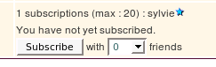

Subscription Tracker Field
This tracker field type is typically used in a tracker for an event subscription. The field allows a user to subscribe to the tracker item and indicate number of eventual friends joining him/her. The administrator can set up the maximum number of subscriptions. Each time, a user subscribes the number will decrease. A user can not anymore subscribe if the number is null. The list of users who have subscribed can be seen by the administrator in the field value.

For instance, create a tracker "Concerts" with a subscription field.
Now create items in this tracker. For each item you can set a maximum number of places. You need to format this value as a number followed by # (ex: 50# means that the concert has 50 places). If you do not want to limit the maximum number of places, use 0# (Tiki 9.x).
Then when you view this tracker item, and have the permission to view the tracker items, you will see a "box" with a "Subscribe" button and the number of places you want to reserve. You will see an "Unsubscribe" button if you already subscribed and you will see the list of users who already subscribed.
When the administrator edits the item, he will see a value like that in the field:
50#210[3],333,455[2]
That means there is 50 places available, the user (userId=210) has reserved 3 places, the user 333 has reserved 1 place, the user 455 has reserved 2 places.
;){kind=link}